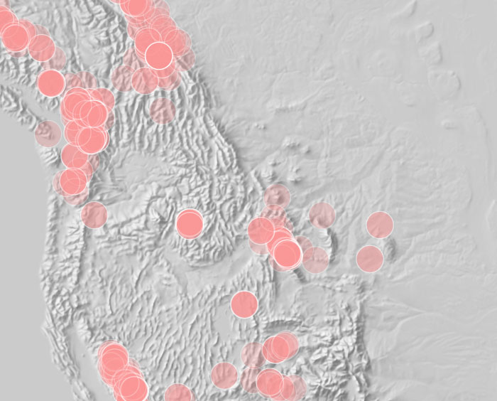
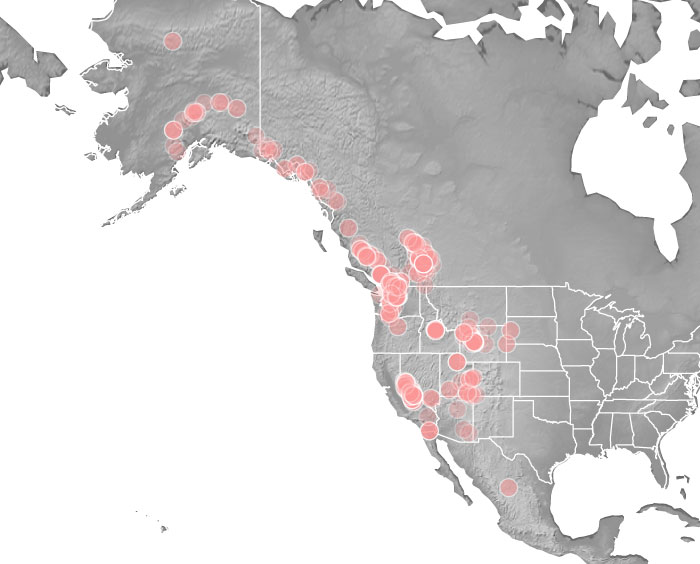
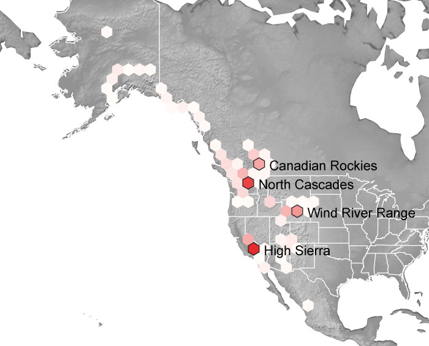
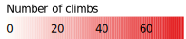
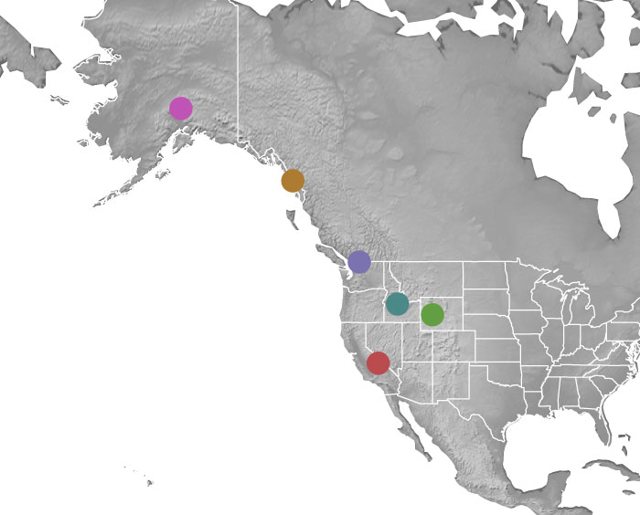
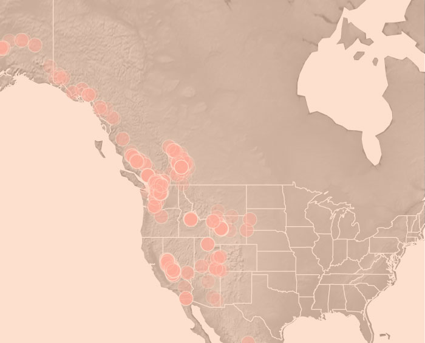

Everywhere Beckey

Everywhere Beckey
Explore the prolific career of a climbing legend.
by: Michael Skaug

60 Year Career
Fred Beckey reported over 400 climbs in the American Alpine Journal over a period of 60 years.

His Favorite Destinations
Beckey climbed throughout western North America, but he returned again and again to these four areas. 

Beckey Was There First
Not only did Beckey get around, he usually got there before anyone else.

Learn More!
Visit this site on a larger screen to interact with the data and discover more!